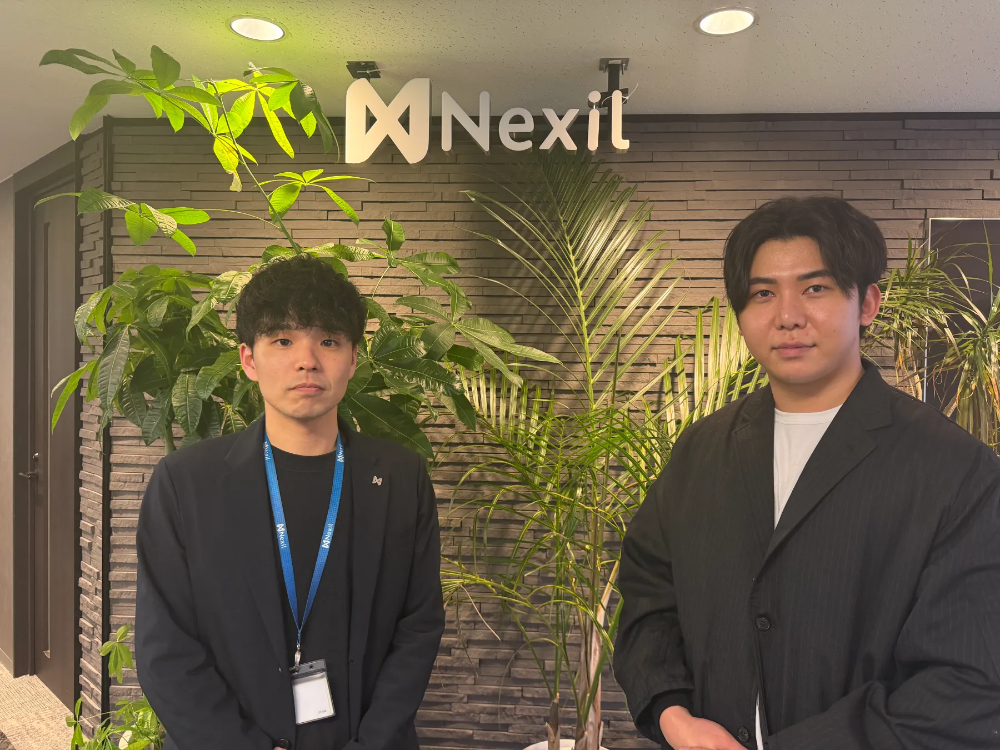
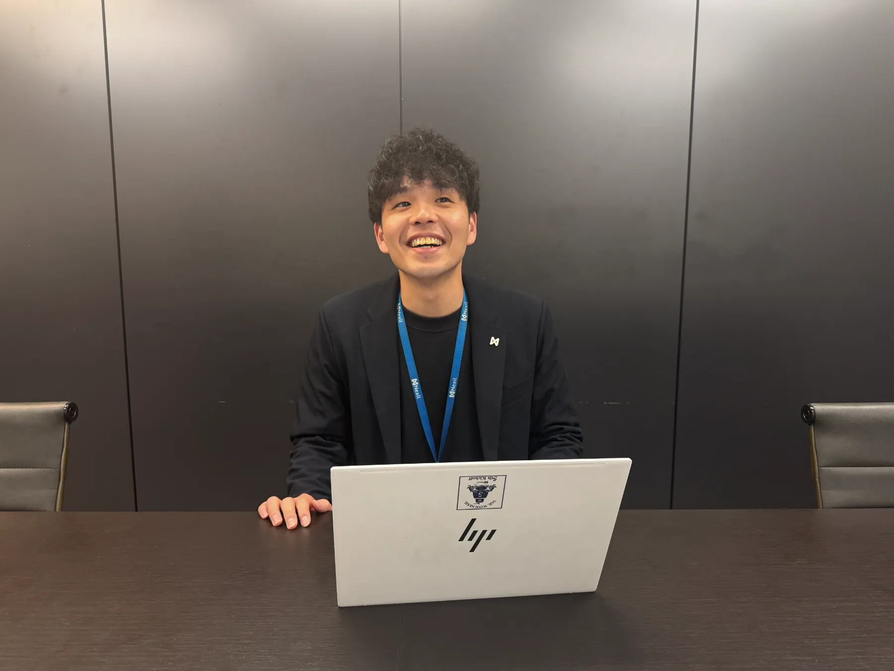

INTRODUCTION
人材紹介業における求職者集客の課題として顕著な「CPAの高騰」「面談実施率の低さ」「歩留まり」。若手×未経験領域を扱う株式会社Nexil様では、自社運用・広告代理店・リスティング等を試行錯誤されていましたが、面談実施率35％前後と課題を抱えていました。「求職者送客の窓口」導入後、有効応募のみを固定単価で獲得できるモデルにより、ROAS・面談着座率ともに大きく改善。今回はその導入プロセスと実際の成果について、主任兼リーダーの原様に詳しくお話を伺いました。
人材紹介事業にて、「求職者送客の窓口」導入前に一番困っていたことは何でしたか？
マーケティング視点で言うと、面談実施率が低かったことが一番の課題でした。面談の予約自体は入るのですが、そこからの実施率が35％程度と低迷してしまっていて。CA（キャリアアドバイザー）のスケジュールがパッと埋まっても、実際にはキャンセルばかりでその半分以上が空いてしまうような状態になっていました。歩留まりとしての決定率にも課題を感じていましたね。

「求職者送客の窓口」導入に際して比較していた他の選択肢は何ですか？
当時は複数の広告代理店さんに集客を回してもらっていました。また、リスティング運用をお願いしたり、インハウスでの運用を試したりもしたのですが、より効率的で満足度の高い成果を求めていました。送客サービス自体の利用は貴社が初めてだったのですが、実は貴社を使う前にも、他社の送客サービスを比較検討はしていました。
「求職者送客の窓口」の導入を決めた"決め手"は何でしたか？
これはもうシンプルで、弊社社長からの「こっちのほうが良いんじゃないか、使ってみてよ」という話がきっかけです（笑）。結果としてこの判断で大きく舵を切って本当に良かったと思っています。
「求職者送客の窓口」導入後の率直なご感想を教えてください
かなり満足しています。貴社から送っていただく求職者様は本当に質が高くて、感謝しかありません。首都圏や年齢などのターゲット層が合致した有効応募のみが固定の金額で送客される仕組みなので、他社と比べてもだいぶありがたいです。ROAS（広告費用対効果）の面でも大きく貢献してくれていますし、現場メンバーの肌感としても「すごく良い」という意識が強いです。最初の段階である程度求職者様を温めていただいているのが、結果に繋がっている大きな要因だと感じています。
導入において最初につまずいた点はありますか？
貴社の仕組み上、1人の求職者様が複数社（最大3社）のエージェントを同時に受けることになるので、そこに対する現場からの懸念は最初はありました。「他社に持っていかれてしまうのではないか」「そこまでリソースを割けない」といった声ですね。ただ、転職市場が活発な今、求職者が複数のエージェントを使うのはメジャーなことなので、結局は他も同じだよねという結論に至りました。
「求職者送客の窓口」が貴社の期待を超えた点があれば教えてください
事前のヒアリングで、求職者様の情報をしっかり吸い上げてくださっている点です。貴社側で事前に期待値調整をしてくれているおかげで、我々は初回面談で「1」から聞かなければいけない部分を省き、より深いヒアリングに時間を使えるため、効率的に面談を進めることができています。

本サービスをうまく活用するための工夫を教えてください
複数社に送客される環境の中で他社と差別化するには、結局「スピード感」「頻度」、そして「人の力（コミュニケーション）」だと思っています。どんなに喋りが上手くても、「この人にお願いしたい」と思ってもらえなければ意味がありません。
そのために、結果を出しているCAのノウハウを言語化し、現場に落とし込んでいます。例えば、内定を取るために面接対策を5〜6回、多いと7回ほど徹底して行ったり、空き時間の30分で練習したり、宿題を出したりしています。また、企業側に直接電話をして「この方は緊張しやすいけど、こういう気持ちで受けています」と求職者様のアピールをするなど、手厚い伴走と連携を武器にしています。
「求職者送客の窓口」のサポート体制について、率直な感想を教えてください
なぜここまで質の高い入り口を作れるのか、不思議でしょうがないくらい素晴らしいです。事前にカルテを作成して情報を共有してくださるフローなど、現場のCAからも「最初から情報が揃っていてやりやすい」「求職者の意欲が高い」と忖度なしに良い声が上がり続けています。
「求職者送客の窓口」導入後、改善した定量的な数値がもしあれば教えてください
全体的な面談単価が下がりましたし、課題だった着座率も向上しました。そして何より、貴社経由でしっかりと決定（内定）が出ていることで全体の底上げになり、会社全体のROASも改善傾向にあります。
「求職者送客の窓口」導入後、定性的な変化がもしあれば教えてください
現場メンバーのモチベーションや手応えが変わりました。「貴社経由の求職者は質が高く、意欲が高い」というのが共通認識になっています。以前は、広告を見て興味本位で応募してきた熱量の低い層も多く、「面談したけどやっぱり辞めます」と言われてしまうことが多かったのですが、今はそういった無駄が減り、CAが本気で求職者様と向き合える環境になっています。
他社の送客サービスと比べて差があると感じる点があれば教えてください
噂レベルではありますが、自社で人材紹介事業をやっている送客サービスだと「自社に良い人材を囲い込んで、余った人材を他社に回す」といった話も聞きます。ですが貴社の場合、そういった不平等さがなく、常に質の高い求職者様を平等に送客していただけている点に大きな信頼を置いています。
改善してほしい点や今後期待することはありますか？
あえて挙げるとすれば、貴社側から求職者様にある職種を打診してNGだった場合、なぜその職種がNGなのかという理由（例えば物理的な症状など）が事前にカルテで細かく分かると助かりますね。こちらで対策の打ちようがあるかどうかの判断ができるので、そこが事前に共有されるとさらにありがたいです。
株式会社Nexil様の今後の展望を聞かせてください
実は、集客に関する戦略を見直した結果、今後は貴社との取り組みに大きな可能性を感じ、この連携にリソースを集中していくこととしました。4月以降はより貴社との連携を強化し、予算を増やしていきたいと考える程信頼しております。
また、個人的な展望としては、貴社の「質の高い入り口を作るノウハウ」をいつか自社でも身につけたいと思っています。現在は集客を外部に依存してしまっているので、少しずつでも自社内で回せるスキルをつけていきたい。お金を払ってでも弟子入りしたいくらいの気持ちです（笑）。今後ともパートナーとして、ぜひよろしくお願いします。